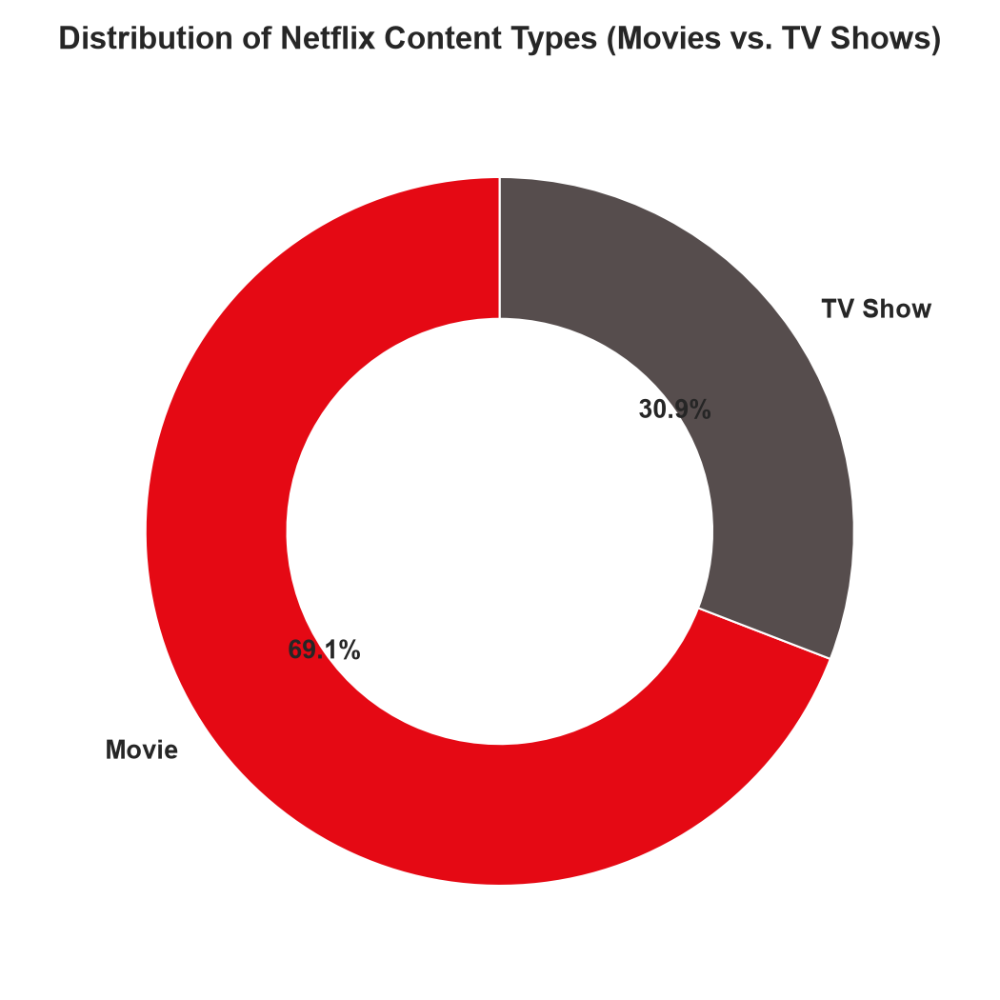
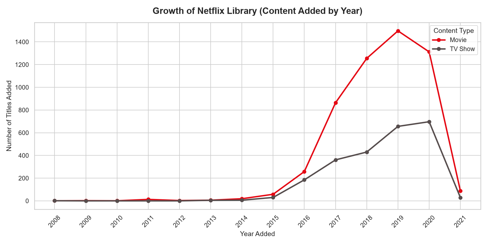
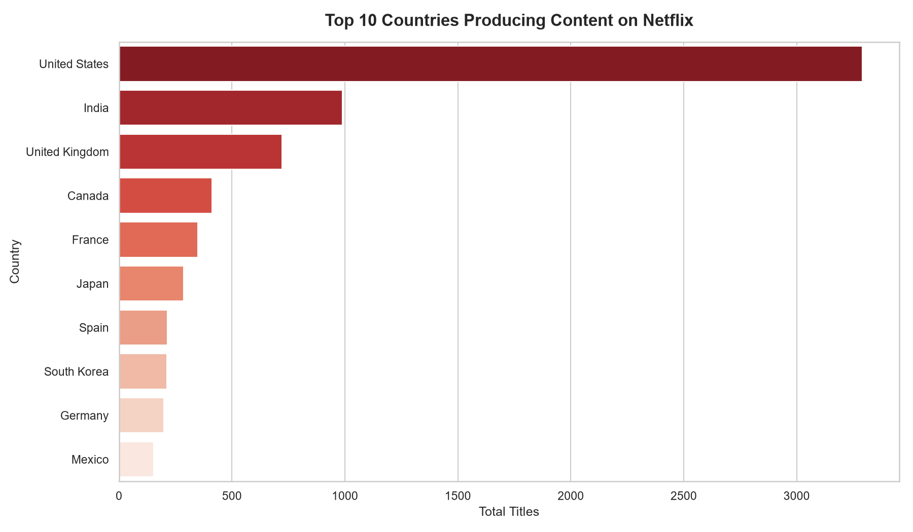
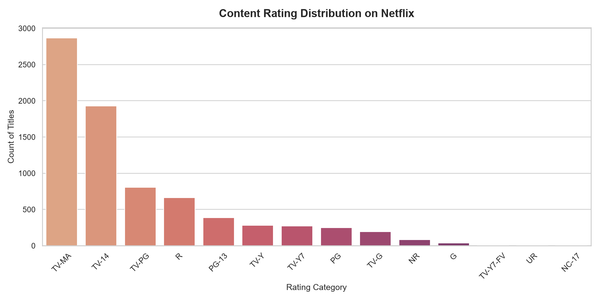
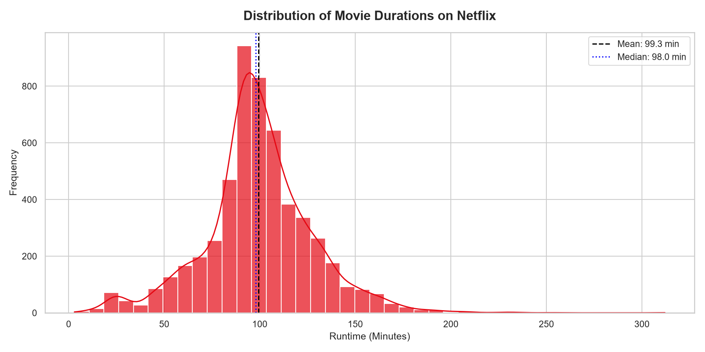
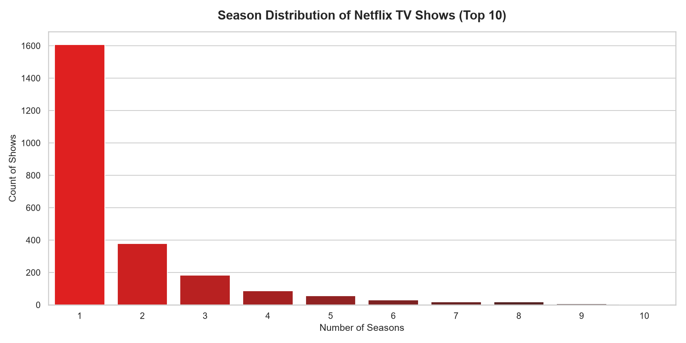

Overview
Interactive Data Insights & Exploratory Statistics
Project Overview
This web interface serves as the frontend visual reporter for our Netflix Movies and TV Shows Exploratory Data Analysis. The project explores distribution channels, production statistics, ratings partitions, and runtimes across historical additions.
To inspect the underlying Python pipelines and code structure, you can view the scripts in the file system:
- Automated Script: [src/netflix_eda.py]
- Interactive Notebook: [notebooks/netflix_eda.ipynb]
Dataset Structure Audited
During the initialization, we loaded 12 parameters and performed completeness evaluations. Below is the audited dataset schema:
| Variable Name | Audited Type | Missing (%) | Handling Action |
|---|---|---|---|
| show_id | String Object | 0.00% | None (Primary Identifier) |
| type | String Categorical | 0.00% | Standardized (Movie vs. TV Show) |
| title | String Name | 0.00% | None |
| director | String List | 30.68% | Imputed with "Unknown Director" |
| cast | String List | 9.22% | Imputed with "No Cast" |
| country | String List | 6.51% | Imputed with "Unknown" |
| date_added | String -> DateTime | 0.13% | Negligible; dropped rows |
| release_year | Integer Year | 0.00% | Used for temporal analysis |
| rating | String Categorical | 0.09% | Imputed with Mode ("TV-MA") |
| duration | String -> Int split | 0.00% | Parsed numeric counts and units |
| listed_in | String Categories | 0.00% | Used for genre groupings |
Interactive Visualizations
Click on any chart to expand it in high resolution.






Hypothesis Verification Results
Claim: Netflix has shifted its focus from releasing movies to acquiring or producing TV Shows in recent years.
Analysis: We tracked the additions year-by-year from 2012 to 2021. TV Show additions surged significantly post-2015. However, in absolute volumes, Movies still make up the major part of yearly additions. For example, in 2020, Movies made up 65.3% of additions, and in 2021, they accounted for 75.2%.
- 2019: Movies = 69.5% | TV Shows = 30.5%
- 2020: Movies = 65.3% | TV Shows = 34.7%
- 2021: Movies = 75.2% | TV Shows = 24.8%
Claim: The majority of content catalog listings on Netflix are rated for mature audiences (TV-MA, R, NC-17).
Analysis: We calculated the percentage of the library belonging to TV-MA (Mature Audience), R (Restricted), and NC-17 ratings. TV-MA is the single largest category on Netflix.
- Total Mature Titles: 3,536
- Percentage of Mature Listings: 45.5% of the total library.
Claim: Netflix movies are typically clustered between 90 and 110 minutes in duration.
Analysis: Runtimes follow a standard bells-curve. The average runtime is 99.3 minutes and the median is 98.0 minutes. Over 40% of the listings lie exactly within the 90-110 minutes range.
- Average Runtime: 99.3 minutes
- Median Runtime: 98.0 minutes
- Titles between 90-110 min: 40.3% of all films.
Audited Data Anomalies
A crucial part of any Exploratory Data Analysis is identifying inconsistencies and potential issues with the data to address in future processing pipelines. During our exploration, we identified the following concerns:
-
Displaced Ratings: We detected that a small number of rows had duration units (e.g. "74 min", "84 min") incorrectly shifted into the
ratingcolumn. This occurs when columns shift during CSV formatting. - High Missing Director Proportions: Approximately 30.68% of the listings lacked directorship metadata. This limits director-specific grouping and tracking.
-
Comma Separated Lists: Columns like
country,cast, andlisted_incontain lists concatenated by commas. Aggregating production sizes or cast frequencies without flattening this data leads to skewed values (e.g., classifying "USA, UK" as a separate country from "USA"). - No Dynamic Performance Metric: The raw dataset lacks quality indicators (e.g. IMDb score, viewer completion rate, or review score). This limits our ability to evaluate what content is successful, rather than just what is available.